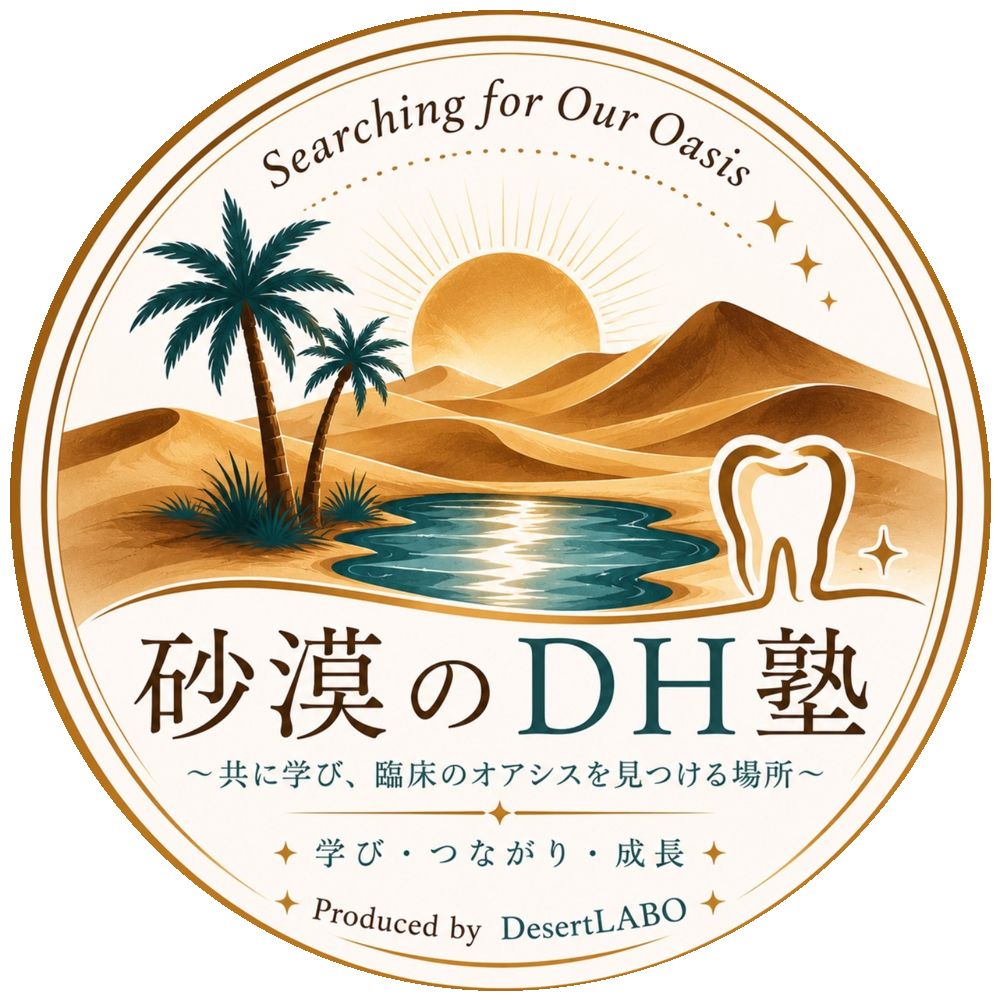

研究・改善・仕組み
学びを一時的なものにせず、再現できる仕組みへ。
Searching for Our Oasis.
学び・つながり・成長する場をつくり、歯科医療の未来をより良くする教育・実践・研究プロジェクト。
CONCEPT
DesertLABOは、歯科衛生士が学び続け、支え合い、現場で力を発揮できる環境づくりを目指します。
学びを一時的なものにせず、再現できる仕組みへ。
迷いの中でも学び続けられる場所をつくる。
小さな気づきが、未来への選択肢になる。
Dental・Dream・Direction・Designの想いを込めて。
実践・探求・検証を通じて、より良い医療と教育を追求する。
NEWS
医療法人つゆくさ歯科医院にて、スタディーグループ「砂漠のDH塾」初のオープンセミナー「OASIS ROAD ～Journey to Oasis～」の開催が2026年11月15日(日)に決定しました。詳細は順次公開いたします。
DesertLABO公式ホームページを公開しました。活動や教育に関する情報を発信していきます。
砂漠のDH塾の公式Instagramを開設しました。活動報告や勉強会情報を発信していきます。
PROJECTS

Produced by DesertLABO
認定歯科衛生士と学ぶスタディグループ。学び・つながり・成長できる場を目指しています。
Instagram：@sabaku_dh_juku
ACTIVITY
CONTACT